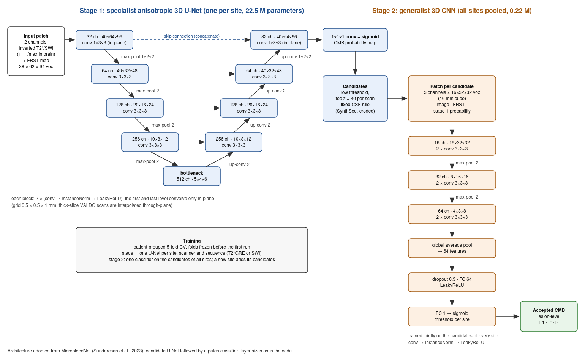

Since September Clara also works on cerebral microbleeds (CMB): dark dots of 2–10 mm on T2*-weighted or susceptibility-weighted MRI. Public data: the training set of the VALDO 2021 challenge, Task 2 (Sudre et al. 2024; 72 scans from three cohorts, Philips 3 T, GE 1.5 T and GE 3 T, slices 0.8–4 mm). The same pipeline also runs on two hospital cohorts that never leave the machine; no number from them appears on this page.

The design is taken from MicrobleedNet (Sundaresan et al. 2023): a U-Net proposes candidates at high sensitivity, a small classifier judges a 16 mm cube around each one. The change: every site, scanner and sequence gets its own U-Net, but there is one classifier, trained on the candidates of all sites. A new site then only trains its U-Net; its candidates join the classifier's pool.
On the 57 VALDO scans used here (out-of-fold, 5-fold CV; 15 of the 72 were spent earlier as a held-out set), stage 1 alone reaches lesion F1 0.565, with the CSF rule 0.627, and with the shared classifier 0.610 (precision 0.624, recall 0.597, 0.88 false alarms per scan). On VALDO alone the classifier is on par with the parameter-free CSF rule; it was built for the mix of sequences. The chart shows the real limit: half of the microbleeds under 2 mm never become a candidate, so no second stage can find them.
Measured on the public VALDO scans, paired over cases with bootstrap intervals. Each row links to its entry in the agent wiki.
| The vessel inpainting of the original removes microbleeds. On 0.8–4 mm slices the Frangi-based clean-up touches many annotated CMB and repaints 12–17 % of the brain. | touches 109 of 236 CMB; without it F1 0.470 → 0.588 |
| Half of the false alarms lie in free CSF. One rule without parameters: drop a candidate whose SynthSeg label is ventricle or CSF. | 98 of 176 false alarms; F1 0.585 → 0.646, 0 CMB lost |
| An in-plane first level beats isotropic 3D nets. Most through-plane voxels are interpolated; the first level convolves and pools only within the slice. | F1 0.404 vs 0.245 (attention U-Net, 40 epochs) |
| Sensitivity levers do not raise lesion F1. About forty single changes to the training recipe; every one that found more small CMB paid with false alarms. | blob loss: small-CMB recall 0.52 → 0.64, F1 −0.044 |
| The training loss does not rank networks. A voxel loss is cheap to lower with many small false alarms. | same loss 0.154: F1 0.176 vs 0.404 |
| The published MicrobleedNet code never trains its teacher. Missing teacher weights only create an exception object that is never raised, so without the pretrained teacher files the student is distilled from a randomly initialised teacher. | code reading |
| Ten second-stage modules (group convolutions, slice tracks, set attention, prototype loss, test-time augmentation) and a merged, more sensitive first stage were run against the plain classifier under rules fixed before the runs. Some looked better on VALDO, none was confirmed over all cohorts. | best on VALDO +0.048, confirmed: none |
The consequence: in a detector of small lesions the first stage decides what can be found, and every claimed gain needs a second seed and a bound fixed in advance; on VALDO alone, single training runs differ by up to about 0.04.